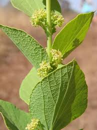

Menispermaceae
Moonseed Family
Menispermaceae, the moonseed family, is a family of flowering plants primarily composed of twining woody lianas (vines), along with some shrubs and rarely herbs or small trees. It belongs to the order Ranunculales, a group of basal eudicots. The family is pantropical and subtropical in distribution, known for its usually dioecious nature (separate male and female plants), small unisexual flowers, apocarpous gynoecium (free carpels), and distinctive crescent-shaped drupe fruits. Many species contain potent isoquinoline alkaloids and are used medicinally or are poisonous.
Overview
Menispermaceae includes about 70 genera and around 450 species, found predominantly in tropical and subtropical forests worldwide, with a few species extending into temperate zones (like Menispermum canadense in North America). The vast majority are woody climbers (lianas), often reaching high into the forest canopy. Their stems frequently exhibit anomalous wood structure (unusual patterns of secondary growth).
A key biological feature is that the plants are typically dioecious, meaning individual plants bear either only male flowers or only female flowers. The flowers themselves are usually small, inconspicuous, greenish or yellowish, and structured in parts of three (3-merous). The female flowers have a superior ovary composed of multiple free carpels (apocarpy), each of which develops into a fleshy, one-seeded fruit (drupe). These drupes are often characteristically curved or crescent-shaped (like a half-moon, hence "moonseed"), with a distinctively sculptured or ornamented inner stony layer (endocarp). The family is rich in biologically active isoquinoline alkaloids, leading to many species being used in traditional medicine (e.g., Pareira Brava from Cissampelos) or as sources of poisons (e.g., tubocurarine from Chondrodendron used in curare).
Quick Facts
- Scientific Name: Menispermaceae
- Common Name: Moonseed Family
- Number of Genera: Approximately 70
- Number of Species: Approximately 450
- Distribution: Pantropical and subtropical, few temperate.
- Habit: Mostly woody lianas, some shrubs/trees/herbs.
- Sexuality: Usually dioecious (separate male/female plants).
- Evolutionary Group: Basal Eudicots - Ranunculales
- Chemistry: Rich in isoquinoline alkaloids; many species medicinal or poisonous.
Key Characteristics
Growth Form and Habit
Predominantly twining woody lianas (vines). Also includes some shrubs, small trees, and rarely perennial herbs. Stems often display anomalous secondary growth patterns in cross-section.
Leaves
Leaves are usually alternate and simple (rarely trifoliolate or palmately lobed). Leaf blades are often palmately veined (main veins radiating from petiole junction) or sometimes peltate (petiole attached to the blade inside the margin). Margins are typically entire. The petiole base and/or apex is often swollen (pulvinate). Stipules are absent.
Sexuality
Plants are typically dioecious, with male (staminate) and female (pistillate) flowers borne on separate individual plants.
Inflorescence
Inflorescences are usually axillary, sometimes emerging from older wood (cauliflorous). They are variable in form, including cymes, panicles, racemes, or fascicles (clusters), and are often relatively inconspicuous.
Flowers
Flowers are small, generally inconspicuous (greenish, whitish, yellowish), actinomorphic (radially symmetrical), and strictly unisexual. They are typically 3-merous, often with multiple whorls of perianth parts.
- Perianth: Usually consists of several whorls (typically 2 or more) of free segments that are often sepal-like (sepaloid). Commonly there are 6 'sepals' in 2 whorls and 6 smaller 'petals' in 2 whorls, but numbers vary, and petals may be absent.
- Androecium (Male Flowers): Stamens number from (3-)6 to numerous (up to 40 or more). Filaments can be free or fused together into a column (monadelphous or synandrous). Anthers typically dehisce via longitudinal slits, sometimes valves. A sterile pistil (pistillode) is often present.
- Gynoecium (Female Flowers): Ovary is superior and characteristically apocarpous, composed of (1-)3-6 (sometimes up to 30 or more) carpels that are free or only slightly fused at the base. Each carpel contains 2 ovules, but typically only one develops into a seed. Styles are usually short or absent, with varied stigma shapes (capitate, lobed, dissected). Sterile stamens (staminodes) are often present.
Fruits and Seeds
The fruit is an aggregate of drupes (fleshy, 1-seeded fruits), with each drupe developing from a single carpel of the apocarpous ovary. The drupes are often distinctively crescent-shaped, kidney-shaped, or horseshoe-shaped due to asymmetric growth around the persistent style base scar (condyle). The inner stony layer (endocarp) is hard and often highly sculptured, ridged, or ornamented, which is taxonomically important. Seeds are curved, conforming to the endocarp shape; endosperm may be present or absent; the embryo is often curved.
Chemical Characteristics
The family is well-known for producing a wide array of isoquinoline alkaloids and related compounds (e.g., benzylisoquinolines, protoberberines, bisbenzylisoquinolines like tubocurarine). These compounds account for the toxicity and medicinal properties of many species.
Field Identification
Identifying Menispermaceae often relies on habit, leaf features, and especially the unique fruits:
Primary Identification Features
- Liana Habit (Mostly): Look for twining woody vines.
- Alternate Leaves: Leaves arranged singly, often simple, frequently palmately veined or peltate. Petiole often swollen at ends (pulvinate).
- Dioecious Plants: Male and female flowers occur on separate plants (requires finding flowering plants of both sexes or inferring from fruit presence/absence).
- Apocarpous Gynoecium (Female Flowers): Ovary composed of multiple free carpels (requires flower dissection).
- Distinctive Drupe Fruits: Fruits are clusters of drupes, often crescent-shaped, with a hard, typically sculptured or ridged endocarp (stone). This is often the most easily recognizable feature, even from fallen fruits.
- Small, 3-merous, Unisexual Flowers: Flowers inconspicuous, parts typically in threes or multiples thereof.
Secondary Identification Features
- Absence of Stipules: Leaves lack stipules.
- Anomalous Wood Structure: Stem cross-sections may show unusual patterns (not easily observed in field).
- Alkaloids Present: Plants may have bitter taste (use extreme caution - many are poisonous).
- Basal Eudicot Context: Shares features like apocarpy and 3-merous flowers with other Ranunculales.
Seasonal Identification Tips
- Year-round: The liana habit and alternate, often palmately veined/peltate leaves are useful vegetative characters. Dried crescent-shaped endocarps may be found on the forest floor.
- Flowering Season: Varies in the tropics. Flowers are small and needed to confirm unisexuality and apocarpy, but often overlooked.
- Fruiting Season: The distinctive drupes are the best diagnostic feature and are often present for extended periods.
Common Confusion Points
Lianas with alternate simple leaves can be confused with other families:
- Aristolochiaceae (Birthwort Family): Some are lianas (Aristolochia) with alternate, often heart-shaped leaves, but flowers are highly zygomorphic, bizarrely shaped (often pipe-like), bisexual, with an inferior ovary, and fruit is usually a capsule.
- Dioscoreaceae (Yam Family): Monocot lianas (Dioscorea) with alternate, often heart-shaped leaves with arcuate-reticulate venation. Flowers small, unisexual (dioecious), 3-merous, ovary inferior, fruit usually a 3-winged capsule or samara.
- Smilacaceae (Greenbrier Family): Monocot lianas (Smilax) often with tendrils and sometimes prickles, alternate leaves often with arcuate-reticulate venation, small unisexual (dioecious) flowers, superior ovary, fruit a berry.
- Other Liana Families (e.g., Fabaceae, Apocynaceae, Bignoniaceae, Vitaceae): Differ significantly in leaf type (often compound), leaf arrangement (often opposite), flower structure (often bisexual, 5-merous, syncarpous), or fruit type.
Field Guide Quick Reference
Look For:
- Woody liana (mostly tropical)
- Alternate simple leaves
- Leaves often palmately veined or peltate
- Plants dioecious (separate sexes)
- Small, unisexual, 3-merous flowers
- Superior ovary with free carpels (apocarpous)
- Fruit a cluster of drupes
- Drupes often crescent-shaped with sculptured stone
- Often poisonous/medicinal (alkaloids)
Key Variations:
- Leaf shape (entire vs lobed)
- Number of carpels/drupes per flower
- Stamen number and fusion
- Endocarp sculpturing
- Specific alkaloid content
Notable Examples
This family contains numerous genera known for their medicinal uses, toxicity, or distinctive fruits:

Menispermum canadense
Canada Moonseed
A deciduous woody liana native to eastern North America, one of the few temperate members of the family. It has broad, palmately lobed leaves resembling grape leaves, small greenish-white flowers, and clusters of black drupes with crescent-shaped seeds. All parts, especially the fruits (which resemble wild grapes but have a single crescent seed), are poisonous.

Cocculus spp.
Snailseed, Coralbeads
A genus of vines and shrubs found in tropical and warm temperate regions worldwide. Species like C. carolinus (Carolina Snailseed) are known for their clusters of bright red drupes containing distinctively coiled or snail-shaped seeds/endocarps.

Cissampelos pareira
Pareira Brava, Velvet Leaf
A pantropical climbing vine with often softly hairy, rounded or kidney-shaped leaves (sometimes peltate). Male flowers are in small cymes, while female flowers are in distinctive long, pendant, bracteate racemes. Roots are used in traditional medicine (as "Pareira Brava") but contain potent alkaloids.

Stephania spp.
(Stephania)
A large genus of vines, often herbaceous or semi-woody, arising from tubers or caudices, found in tropical Asia, Africa, and Australia. Many species have distinctly peltate, circular leaves. Some species are popular horticultural curiosities (S. erecta), while others are used in traditional medicine and contain various alkaloids.

Chondrodendron tomentosum
(Source of Tubocurarine)
A large liana native to the Amazon rainforest. This species is historically significant as a primary source of D-tubocurarine, the active alkaloid component in certain types of curare arrow poison used by indigenous peoples to paralyze prey. Tubocurarine later became important medically as a muscle relaxant during surgery.
Phylogeny and Classification
Menispermaceae belongs to the order Ranunculales, which is one of the earliest diverging lineages within the Eudicots (Basal Eudicots). This position places it far from the core eudicot groups like Rosids and Asterids. Ranunculales is characterized by features often considered ancestral among eudicots, such as flowers with parts often in threes, numerous stamens, and frequently apocarpous gynoecia (free carpels).
Within Ranunculales, Menispermaceae forms a well-supported monophyletic group. Its sister group is thought to be the clade containing Berberidaceae (Barberry family) and Ranunculaceae (Buttercup family). The order also includes Papaveraceae (Poppy family), Lardizabalaceae, Eupteleaceae, and Circaeasteraceae. The predominantly liana habit of Menispermaceae is unusual within the mostly herbaceous or shrubby context of the order.
Position in Plant Phylogeny
- Kingdom: Plantae
- Clade: Angiosperms (Flowering plants)
- Clade: Eudicots
- Clade: Basal Eudicots
- Order: Ranunculales
- Family: Menispermaceae
Evolutionary Significance
Menispermaceae is significant for understanding early eudicot evolution:
- Basal Eudicot Lineage: Provides insights into the characteristics of early diverging eudicots, retaining features like apocarpy and often 3-merous flowers.
- Evolution of Liana Habit: Represents a major radiation of woody climbers within a predominantly non-climbing order, showcasing adaptations for reaching light in forest environments.
- Alkaloid Biosynthesis: The diverse array of isoquinoline alkaloids highlights the early evolution of complex chemical defense pathways in eudicots.
- Fruit Specialization: The distinctive crescent-shaped drupes with sculptured endocarps represent a specialized adaptation, likely related to seed protection and dispersal.
- Dioecy: The prevalence of separate sexes (dioecy) is notable and raises questions about its evolutionary drivers within the family.